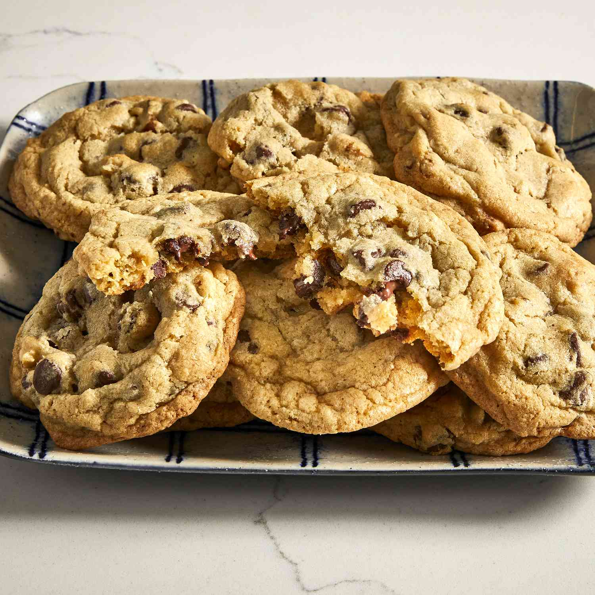

BEST CHOCOLATE CHIP COOKIES

This chocolate chip cookie recipe is truly the best. Just take it from the 14,000 members of the Allrecipes community who have given it rave reviews! These chocolate chip cookies are beloved because they're soft, chewy, and absolutely irresistible. Our top-rated recipe for chocolate chip cookies will quickly become your go-to.
INGREDIENTS:
- 1 cup butter, softened
- 1 cup white sugar
- 1 cup packed brown sugar
- 2 eggs
- 2 teaspoons vanilla extract
- 1 teaspoon baking soda
- 2 teaspoons hot water
- ½ teaspoon salt
- 3 cups all-purpose flour
- 2 cups semisweet chocolate chips
- 1 cup chopped walnuts
STEPS:
- Gather your ingredients, making sure your butter is softened, and your eggs are room temperature.
:max_bytes(150000):strip_icc():format(webp)/10813-best-chocolate-chip-cookies-mfs-step-1-1121-d465078f5a5144718d72ed05d2422e23.jpg)
- Preheat the oven to 350 degrees F (175 degrees C).
- Beat butter, white sugar, and brown sugar with an electric mixer in a large bowl until smooth.
:max_bytes(150000):strip_icc():format(webp)/10813-best-chocolate-chip-cookies-mfs-step-2-1191-1b57f642a52849ce84a25c48363c4013.jpg)
- Beat in eggs, one at a time, then stir in vanilla.
:max_bytes(150000):strip_icc():format(webp)/10813-best-chocolate-chip-cookies-mfs-step-3-121-f73dc5abc3454dfab534d8efc0e966e6.jpg)
- Dissolve baking soda in hot water. Add to batter along with salt.
:max_bytes(150000):strip_icc():format(webp)/10813-best-chocolate-chip-cookies-mfs-step-4-123-abd5290df87f47668cbc8eef6587c292.jpg)
- Stir in flour, chocolate chips, and walnuts.
:max_bytes(150000):strip_icc():format(webp)/10813-best-chocolate-chip-cookies-mfs-step-5-125-b755dee648e949129ad022d8b019b405.jpg)
- Drop spoonfuls of dough 2 inches apart onto ungreased baking sheets.
:max_bytes(150000):strip_icc():format(webp)/10813-best-chocolate-chip-cookies-mfs-step-6-128-44e1d4355a6a4441a3ba993e2a2b74fa.jpg)
- Bake in the preheated oven until edges are nicely browned, about 10 minutes.
:max_bytes(150000):strip_icc():format(webp)/10813-best-chocolate-chip-cookies-mfs-step-7-134-e0952f5171a2434dbb2b3bb53b18648a.jpg)
- Cool on the baking sheets briefly before removing to a wire rack to cool completely.
:max_bytes(150000):strip_icc():format(webp)/10813-best-chocolate-chip-cookies-mfs-step-8-138-d4f25b55db5c417b9d6ece8cf98700f3.jpg)
- Store in an airtight container or serve immediately and enjoy!
:max_bytes(150000):strip_icc():format(webp)/10813-best-chocolate-chip-cookies-mfs-146-4x3-b108aceffa6043a1ac81c3c5a9b034c8.jpg)